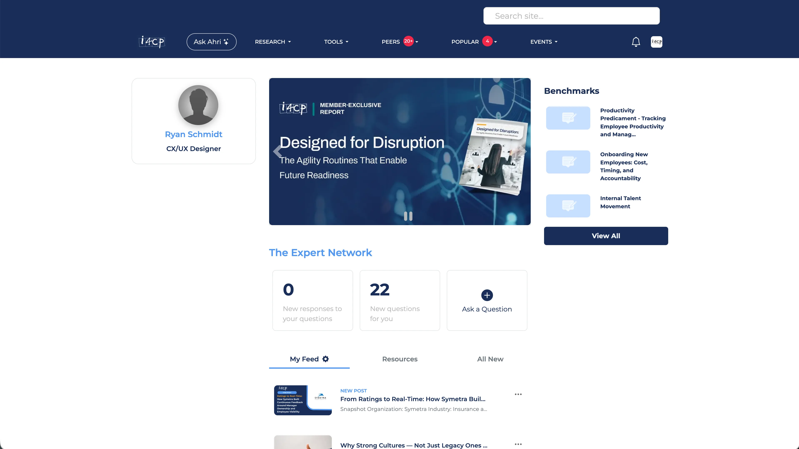
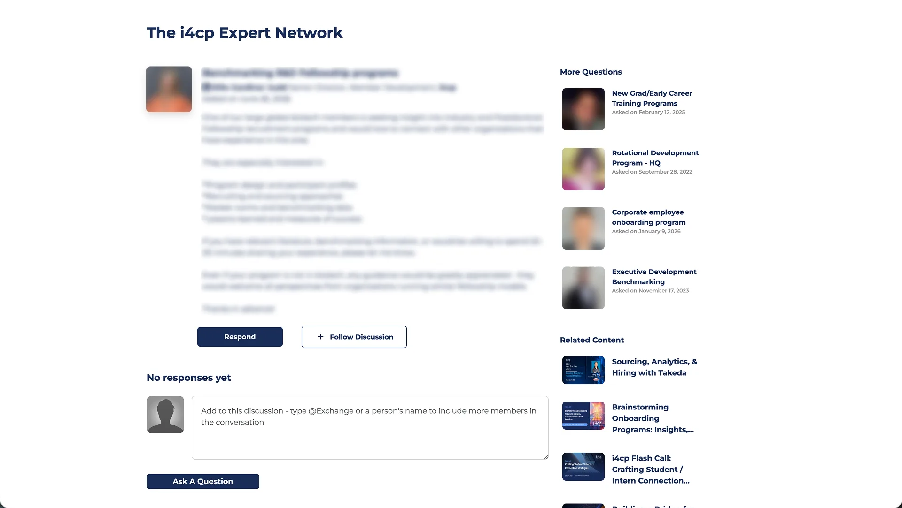
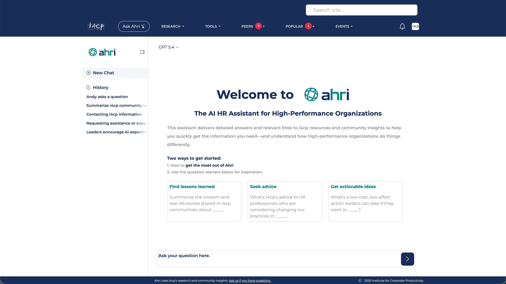

Member Portal Growth Overhaul
When your entire business is research subscriptions, bad navigation kills renewals. Our old taxonomy was organized around internal departments, so members couldn't find benchmarks for their specific roles and assumed the content didn't exist. Many stopped logging in altogether.
As the sole designer, I rebuilt the portal's information architecture from the ground up, replaced the clunky search bar with an AI search omnibar, and organized everything around how HR executives actually think.
At a glance
- The Problem: The portal buried thousands of research papers behind a confusing internal taxonomy. Members gave up looking and assumed i4cp didn't cover their industry, putting renewals at risk.
- What I Built: Restructured the four-tier taxonomy around executive priorities, introduced progressive disclosure to keep navigation calm, and unified AI search and keyword lookup into a single omnibar.
- The Result: Shipped to production in September 2025. AI tool adoption jumped 500%, and we retired the old keyword search box without member pushback.
Problem
i4cp publishes extensive workforce research and benchmarks, but members were struggling to find relevant studies. The portal's navigation had grown organically over years, ending up organized like an internal org chart rather than a member resource. If a VP of Talent wanted a compensation benchmark, they had to click through three arbitrary categories and hope for the best.
Usage logs told a frustrating story. Members would log in, get overwhelmed by cluttered menus, type a desperate keyword into the old search bar, get a wall of irrelevant links, and leave. Our AI assistant, Ahri, was tucked away where nobody noticed it. My job was to rebuild the entire navigation model and make finding research feel effortless.
Goals
- Organize by member intent: Map every category to how HR executives describe their business problems, not internal research teams.
- Turn search into a guide: Promote the Ahri AI discovery engine into a central omnibar that answers complex questions or falls back to keyword matching when needed.
- Ship a clean MVP first: Redesign the primary navigation, homepage, and search experience without trying to rebuild the entire portal in one giant sprint.


Research
I didn't have to invent a new taxonomy from scratch. Our research team had already drafted a four-level hierarchy based on interviews with member companies.
Putting all four tiers into a giant megamenu overwhelmed users with dozens of competing links. Hiding them inside nested drill-downs meant members rarely discovered related research. I spent research sessions testing how to progressively reveal deeper topics only after a member selected a primary focus area.


The IA Challenge: Four Levels Without Losing the Thread
The content hierarchy spans four tiers: Areas of Focus, Priorities, Topics, and individual assets. The legacy portal mirrored our internal filing system. The redesign organizes research around the strategic questions members ask their teams.
Content hierarchy: Four Levels Without Losing the Thread
The model moves from broad member intent to specific resources across four tiers. Click each level to see how progressive disclosure keeps navigation calm.
For example, an HR leader looking for leadership succession benchmarking starts with Leadership as a broad domain, narrows into a strategic priority, scans related topics, and picks their preferred format (a research report, quick benchmark, or webinar). The navigation guides that narrowing journey without dumping the whole taxonomy on them at once.
Defining decision
Progressive disclosure over flat navigation.
Exposes too much structure at once, creating a noisy entry point for members who need a clear next step.
Reveals deeper levels only as members commit to a practice area or priority.
I explored flatter navigation patterns, including an expandable tree menu, but user testing showed it felt like browsing a dense Windows file system. Progressive disclosure won because it gives members a calm, clear starting point, revealing sub-topics only as they click deeper into an area of interest.


Constraints
Designing During a Rebrand
An external agency was overhauling i4cp's brand guidelines at the same time, meaning colors, fonts, and styling rules were in constant flux.
Design Token Layer
I built the portal UI on a foundation of CSS variables and design tokens. When the agency handed over finalized colors and type specs, we updated them in one place without touching component markup.
Enormous Surface Area
Changing the information architecture affected nearly every page on the platform. Trying to redesign everything at once would have delayed release by a year.
Strict MVP Phasing
We focused Phase 1 strictly on the primary navigation, global search, and the homepage. Deeper administrative views and secondary subpages were scheduled for fast follow-ups.
Post-MVP Roadmap
We intentionally postponed deeper workflow features (like automated research synthesis briefs, peer benchmarking matching, and customized alert digests) so we could ship the new navigation and discovery engine without slipping our deadline.
Outcomes & Impact
The redesigned portal went live in September 2025. Untangling the navigation and simplifying discovery directly helped member retention, turning what used to be a frustrating scavenger hunt into an intuitive library.
Making Ahri the central search omnibar led to a 5x increase in queries during the first month.
Retired the legacy search input and transitioned members to the Ahri omnibar with zero support tickets or keyword fallback failures.
Beyond raw numbers, we saw a noticeable uptick in saved articles and report downloads across practice areas that members rarely visited before. When navigation makes sense, people naturally explore further.
Replacing the Old Search Bar
Killing off a legacy search bar always makes stakeholders nervous. The leadership team wanted members to use the new AI assistant, but some worried that removing the familiar search box would cause a flood of support tickets.
Instead of cluttering the header with two different search inputs, I pitched combining them into one smart bar. If someone typed a full question, Ahri synthesized an answer from our research. If they just typed a two-word keyword like "succession planning," the bar smoothly returned traditional search results. That compromise gave stakeholders confidence, kept the header clean, and let us sunset the old search system without disrupting anyone's daily workflow.
Designing for High-Stakes Member Decisions
Nobody renews a research membership just because they like logging in. Members stay because when their CEO asks for benchmarking data on hybrid work policies, they can find exact, defensible numbers in three minutes instead of spending hours digging.
By designing clear pathways through our four-tier taxonomy and backing it up with a reliable search omnibar, we helped members get straight to the answers they were paying for.